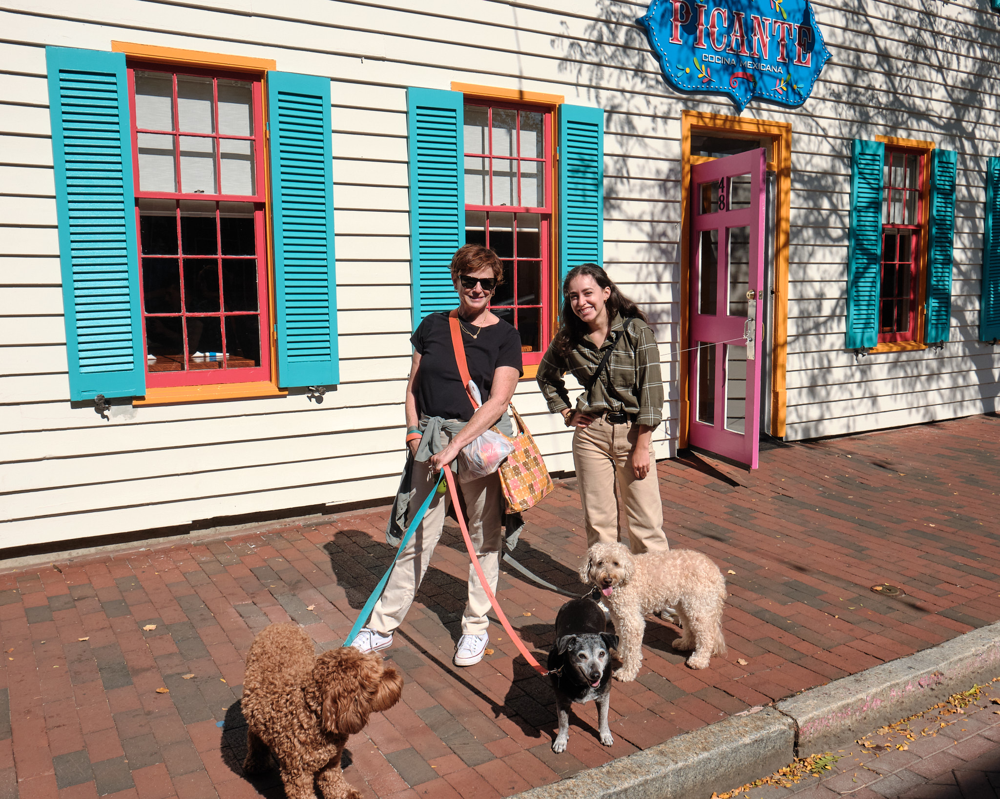
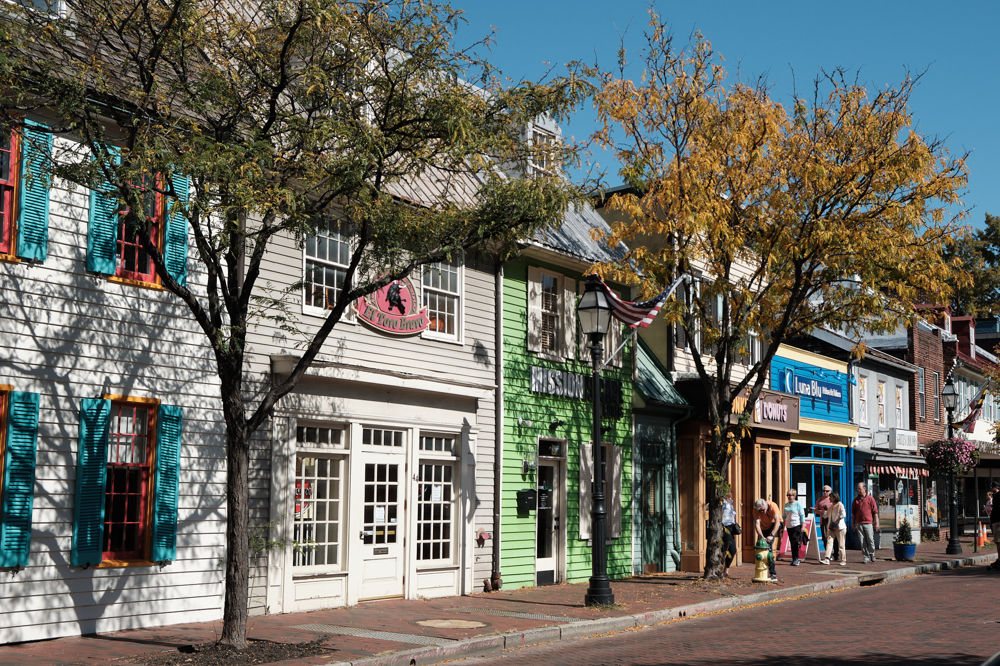

On a beautiful sunny fall day, Audrey, Carolyn and I ventured to Annapolis with Ollie, Sugar Baby and Lola. What’s a beautiful outing without three dogs? The dogs were especially delighted when we immediately came upon a Dog Treat Parlor on Main Street–fresh biscuits for all!

Annapolis has a great collection of colonial architecture from different eras. At the visitor center we picked up a walking tour guide. The visitor center was on such a colorful street!

We looked around town, appreciating the quieter side streets more than the touristy main street. There were some cute galleries. Audrey found a decorative pottery plate to buy. And she found a great mural of her Supreme Court heros:
Annapolis has the oldest state Capitol Building still in use. Unfortunately, it was covered in scaffolding. But there were nice brick buildings nearby. (Click to enlarge)


I found a quick flower photo before we settled into a outdoor cafe area for lunch.
The served a crazy Bloody Mary with two strips of bacon atop and Old Bay along the rim. As we were in Maryland, I wanted Blue Crab, and found a delicious Crab Benedict. The dogs were very good at lunch, mostly taken a rest beside our table.
Annapolis was also a great place for door pictures. The rightmost photo is called “America’s most beuatiful door.” (Click to enlarge)


Finally, on the way heading back to our car, I came across a beautiful Victorian, apparently they only one in Annapolis.